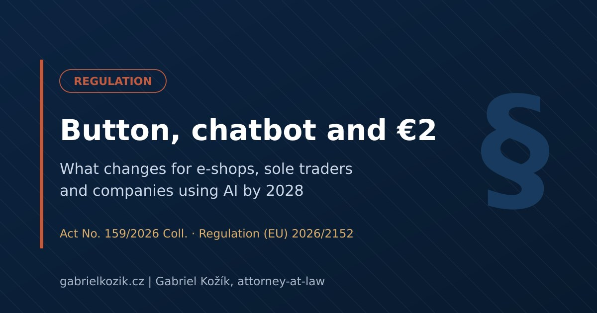
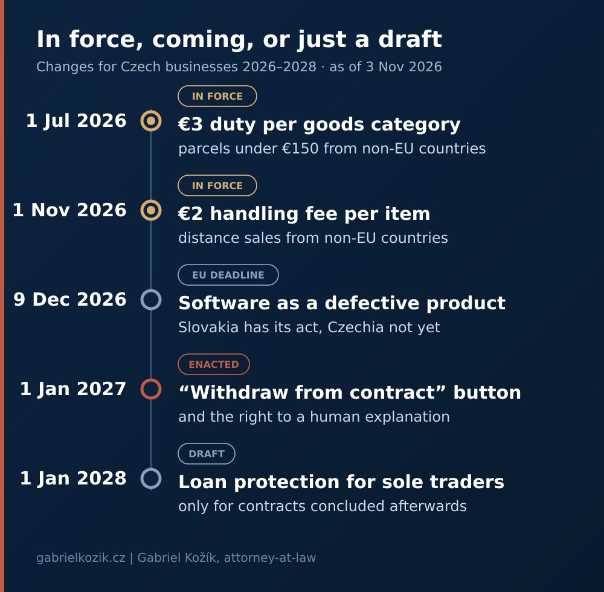

Button, Chatbot and Two Euros per Item: What Changes for Czech Businesses by 2028

Three pieces of legislation from recent weeks target completely different people: sole traders with a loan, e-shops selling goods from outside the EU, and anyone who sells online. They share one thing. The state no longer assumes that the weaker party can look after itself.
One of them also contains a rule that is almost missing from the overviews written for e-shops, even though it concerns every company that lets its customers talk to a chatbot.

Why put three different changes together?
Consumer law has long relied on a simple line: the consumer is protected, the business can manage. That line is now moving in two directions. Protection is extending to small entrepreneurs, and at the same time the rules for the digital channels through which most contracts are concluded today are getting stricter.
Loans for sole traders: only a draft so far
In September, the Czech Ministry of Finance sent out for consultation an amendment that would give self-employed individuals part of the protection consumers already have. The key change concerns acceleration of a loan. If a sole trader still owes CZK 100,000 in principal and the interest until the end of the term adds another CZK 50,000, the lender can today demand CZK 150,000 at once upon acceleration. Under the draft, the lender could demand only the principal immediately, with interest accruing gradually.
The second part tightens notarial deeds with consent to enforceability. The debtor would have to be present in person, so the deed could no longer be signed through a power of attorney granted to the lender.
To be precise: this covers loans and credit, not leasing, and it does not apply to legal entities. It is still only a draft, with proposed effect from 1 January 2028 and only for contracts concluded after that date.
Since 1 November: two euros per item
Since 1 November 2026, an EU handling fee of EUR 2 applies to goods sold at a distance from non-EU countries. It was introduced by Commission Delegated Regulation (EU) 2026/2152, published in the Official Journal on 22 October. It applies regardless of the value of the parcel and comes on top of the EUR 3 duty per goods category charged on low-value parcels since July.
Watch the word "item". The Czech language version of the regulation wrongly refers to pieces, and the Czech Customs Administration has flagged the error. Five identical T-shirts in one parcel should therefore count as one item. How exactly mixed parcels will be counted is still being settled.
This mainly hits dropshipping, marketplace sellers and customs declarants. A company importing components from outside the EU for its own production typically does not pay the fee, as this is not a distance sale.
From 1 January 2027: the "Withdraw from contract" button
Act No. 159/2026 Coll. was published in the Collection of Laws on 2 September and takes effect on 1 January 2027. It does not create a new right of withdrawal, only a new way to exercise it. Anyone concluding contracts with consumers via a website or app must let them withdraw directly in the online interface (new Section 1830a of the Czech Civil Code). In practice this means:
- A button. Labelled "Withdraw from contract" (in Czech „Odstoupit od smlouvy“) or another unambiguous wording, working throughout the whole withdrawal period.
- Two steps. The customer first fills in or confirms their name, contract details and a contact for the confirmation, then sends the statement with a "Confirm withdrawal" button.
- Confirmation. The business must confirm receipt without undue delay in text form, including the content of the statement and the date and time it was sent. In my view, a message on the website is not enough.
Information about the button must be added to pre-contractual information and terms and conditions. A missing button can lead to a fine of up to CZK 5 million. It remains an open question whether missing information about this option extends the withdrawal period by up to a year. The button does not apply to B2B sales or to goods for which there is no right of withdrawal, such as made-to-measure or perishable goods.
Why the chatbot caught my attention most
Act No. 159/2026 Coll. is mainly about financial services concluded at a distance, and the button is only one part of it. Inside is a rule that hardly anyone talks about. Before the contract is concluded, the business must explain to the consumer, free of charge, the pre-contractual information, the main features of the service and its consequences, so that the consumer can assess whether the contract suits them.
If the business used only an automated online tool for this, typically a chatbot or robo-adviser, the consumer has the right to an explanation by a human (Section 1845(2) of the Civil Code). This applies before the contract is concluded and, in justified cases, afterwards as well, in the language in which the consumer received the pre-contractual information. In case of doubt, the business must prove that it provided and explained the information (Section 1845a).
The scope is narrow for now. Consumer credit, insurance and investment services have their own sector-specific rules that take precedence. But the principle matters beyond finance: a machine may talk to the customer, but it may not be the final word. Courts see it similarly. Air Canada failed with the argument that it was not liable for its chatbot's promise, as I describe in AI in Court. Anyone deploying AI in customer support today should expect this model to spread.
AI may talk to your customers. Responsibility for what it says still stays with your company.
And one more date, 9 December: software as a defective product
By 9 December 2026, Member States must transpose Directive (EU) 2024/2853 on liability for defective products, under which software, including AI systems, is a product. Slovakia has done so in Act No. 242/2026 Coll., effective precisely from 9 December. As of the date of this article, the Czech amendment to the Civil Code has not been published in the Collection of Laws.
Anyone supplying software or software-based products to Slovakia or other countries that met the deadline will therefore face the new regime sooner than at home. And liability for a defective product towards an injured person cannot be limited or excluded by contract. I explain why not to rely on limitations in terms and conditions in When AI Makes a Mistake, the Bill Goes to You.
What to do before the end of the year
- E-shops: implement the button, test the confirmation e-mail, update terms and conditions and pre-contractual information.
- Goods from non-EU countries: recalculate costs per item, not per parcel.
- Companies with a chatbot: decide when a human steps into the conversation, how the customer asks for it and how you document it.
- Software suppliers to Slovakia and the EU: review contracts and insurance in light of the new product liability rules.
- Sole traders with a loan: nothing for now, just watch whether the draft passes.
Selling online, or using a chatbot in customer communication? The first 30 minutes of consultation are free and in plain language.
Book a consultationSources and further reading:
- Act No. 159/2026 Coll., amending certain acts in connection with financial services contracts concluded at a distance (e-Sbírka, in Czech)
- Commission Delegated Regulation (EU) 2026/2152 on the Union handling fee (EUR-Lex)
- Czech Customs Administration: notice on the error in the Czech language version of Regulation (EU) 2026/2152, 26 October 2026
- Czech Ministry of Finance: press release on loan protection for sole traders, 25 September 2026 (in Czech)
- Directive (EU) 2024/2853 on liability for defective products (EUR-Lex)
- Slovak Act No. 242/2026 Coll. on liability for damage caused by a defective product (Slov-Lex, in Slovak)